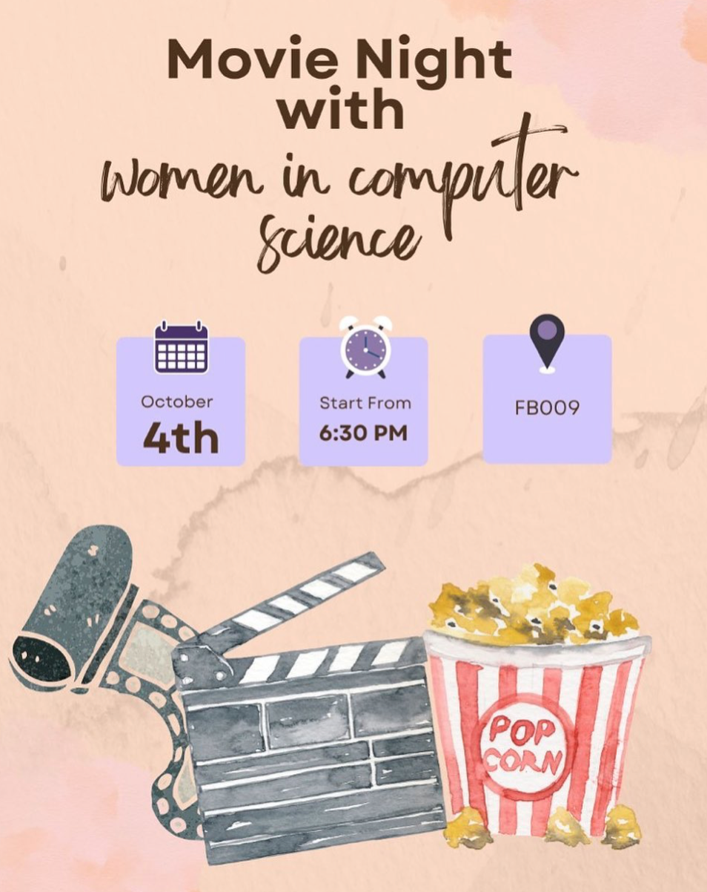
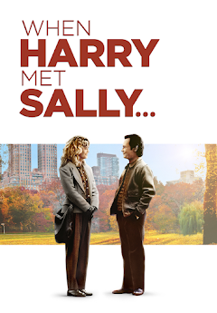
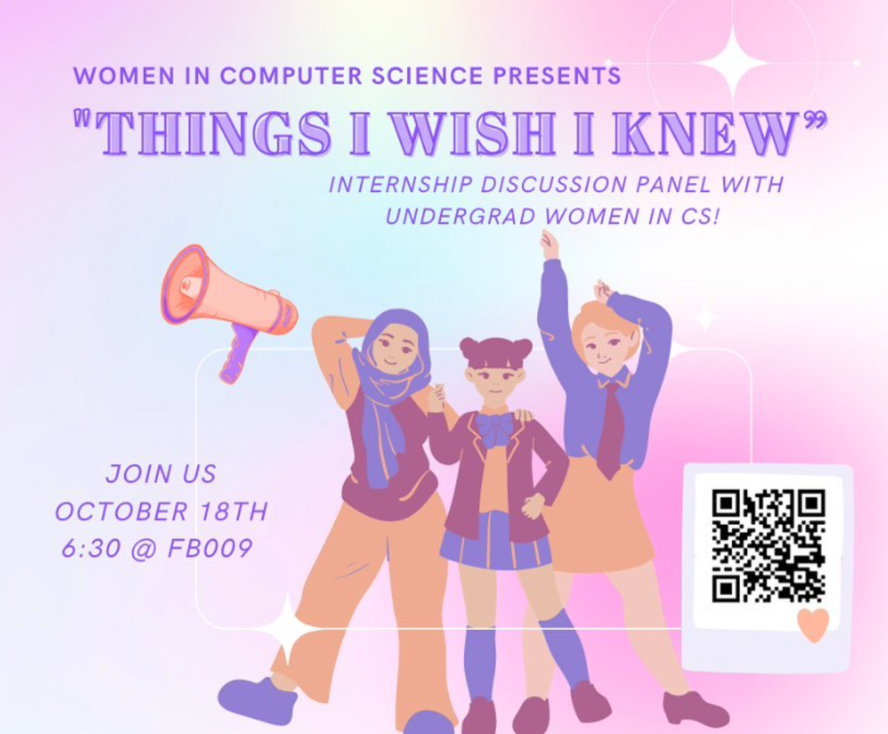
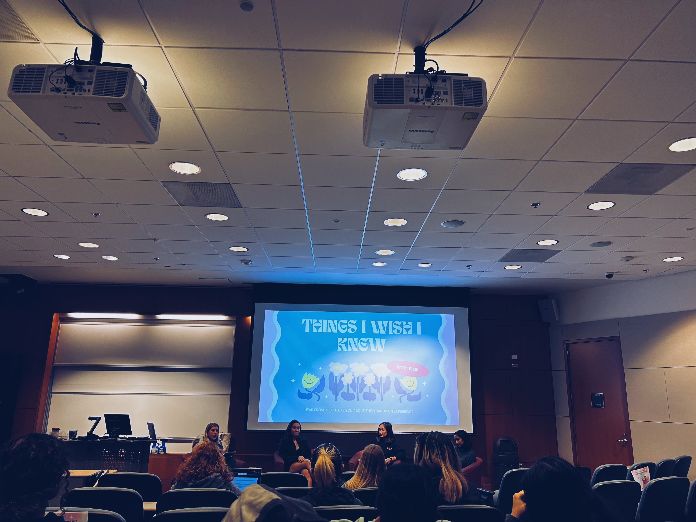

Welcome to the gallery page for the WiCS Website. We are currently under construction. Check back soon for more updates!
Our first event for the 2022 academic year welcomed in over 50 women in computer science at UNC to learn more about our club and meet fellow students. After a brief introduction of the officers and an icebreaker event, our first meeting concluded with a bracelet making event.


Our second event introduced Turtle Graphics to our members at UNC using Python. We were able to create artwork that is displayed on the website and enjoy some delcious turtle cupcakes!


Our third event of the fall semester was a picnic. Members gathered on a rainy Sunday afternoon to connect with other members and relax.

A fun social event where all of the club members were able to socialize and enjoy watching the best rom-com of all time, "When Harry Met Sally!"
 For this event, members were able to listen to upperclassmens talk about all things internships ranging from applying and interviewing, and their experiences as an intern. During this, members were able to ask questions and gain valuable advice from their upperclassmen peers.
 